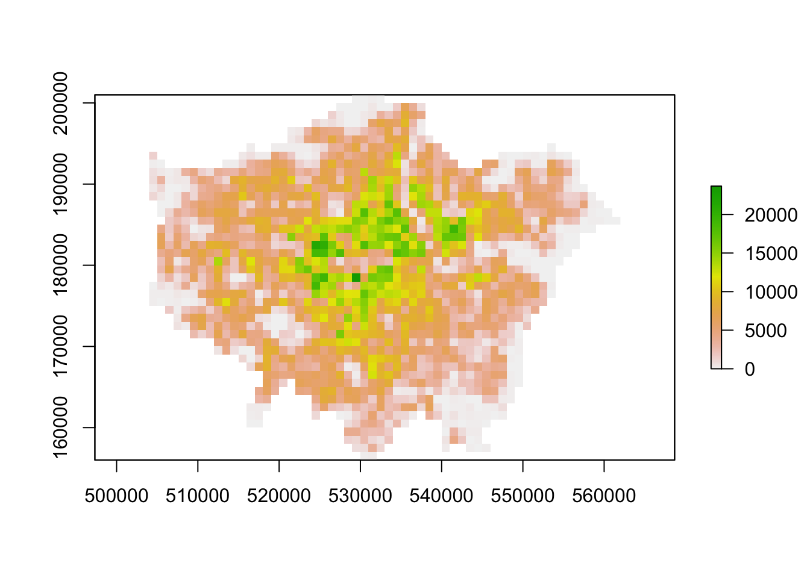
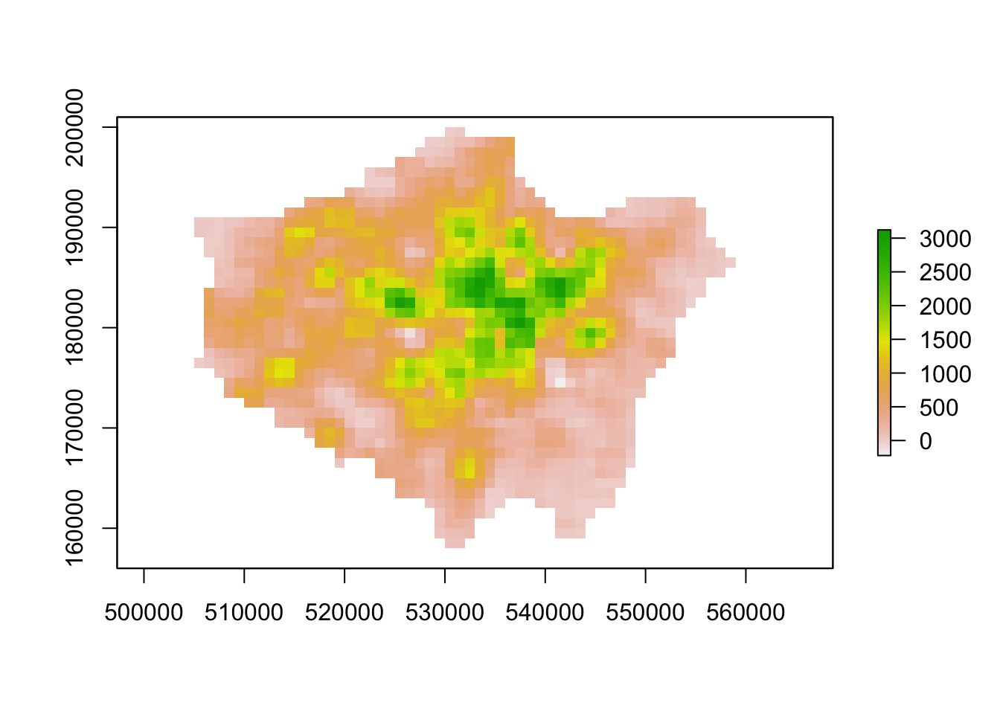
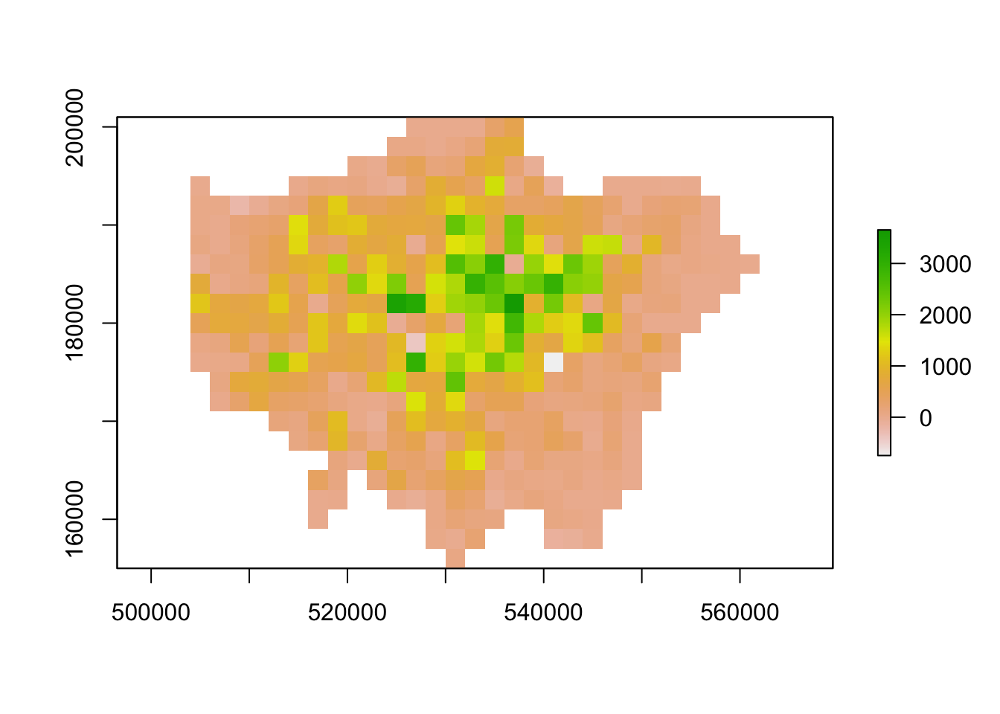
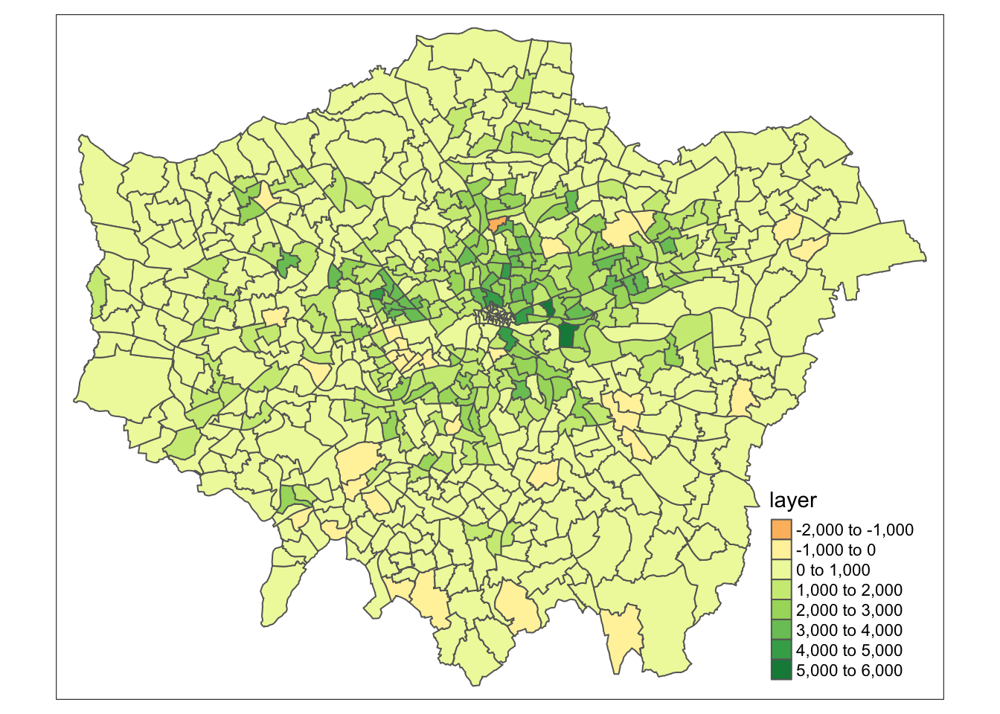

9 Rasters, Zonal Statistics and Interpolation
So far, the majority of our module has focused on the use of vector data and table data (that we have then joined to vector data). This week, we switch it up by focusing primarily on raster data and its analysis using map algebra and zonal statistics.
9.1 Lecture recording
- Lecture W9
9.2 Reading list
- Reading #1
- Reading #2
9.3 Raster data
This week’s content introduces you to raster data, map algebra and interpolation. After first looking at population change in London using raster data, we will then look at generating pollution maps in London from individual point readings taken from air quality monitoring sites across London. To complete this analysis, we will be using several new data sets:
- Population rasters for Great Britain: Raster data sets containing estimated population counts for Great Britain in 2001 and 2011 at a spatial resolution of 1km.
- NO2 readings across London: A data set contain readings of NO2 for individual air quality monitoring sites in London.
We will also use our London Wards (2018) administrative boundaries data set at various points within both practicals. This file should already be in your raw/boundaries folder.
9.3.1 Housekeeping
Let’s get ourselves ready to start our lecture and practical content by first downloading the relevant data and loading this within our script. Open a new script within your GEOG0030 project and save this script as wk9-pollution-raster-analysis.r.At the top of your script, add the following metadata (substitute accordingly):
# Analysing population change and pollution in London
# Data: January 2022
# Author: JustinIn addition to those libraries you should now be familiar with, we will need to install and use:
rgdal: for under-the-hood spatial data managementrgeos: for more under-the-hood spatial data managementgstat: to complete our various interpolation techniquesopenair: to download our pollution data directly from the London Air data portalsp: for spatial analysis (“predecessor” ofsf)
Within your script, add the following libraries for loading:
# libraries
library(tidyverse)
library(sf)
library(tmap)
library(RColorBrewer)
library(raster)
library(sp)
library(rgdal)
library(rgeos)
library(gstat)
library(spatstat)
library(openair)9.3.2 Loading data
9.3.2.1 Population data
For the first part of this week’s practical material we will be using raster datasets from the Population Change and Geographic Inequalities in the UK, 1971-2011 (PopChange) project. In this ESRC-funded project, researchers from the University of Liverpool created raster population surfaces from publicly available Census data (1971, 1981, 1991, 2001, 2011). These population surfaces are estimates of counts of people, displayed within a regular grid raster of a spatial resolution of 1km. These surfaces can be used “to explore, for example, changes in the demographic profiles of small areas, area deprivation, or country of birth”.
To enable this, the researchers have created several categories of rasters, including: Total Population, Population by Age, Population by Country of Birth, Population by Ethnicity etc. This week we will use the Total Population data sets. To access data directly from the PopChange website requires a simple registration for log-in, you can then navigate through the data sets and choose those you would like to download.
For this week, we have gone ahead and downloaded the data for you, which you can access directly from the links below:
| PopChange Raster | File Type | Link |
|---|---|---|
| Population surface GB 2001 - Total Population | asc |
Download |
| Population surface GB 2011 - Total Population | asc |
Download |
Once downloaded, copy over these files into your data/raw/population folder.
9.3.2.2 Pollution data
For the second part of this week’s practical material, we will explore several methods of interpolation by looking at air pollution in London by getting data from the Londonair website. Londonair is the website of the London Air Quality Network (LAQN), and shows air pollution in London and south east England that is provided by the Environmental Research Group of Imperial College London. The data are captured by hundreds of sensors at various continuous monitoring sites in London and the south east of England. The data are publicly available for download - and we can use an R package to directly interact with the data without needing to download it.
The openair R package enables us to import our data directly using the importMeta() and importKCL() functions. To understand these functions, you can look at the documentation of the openair package so that you get an idea why we use them in our code below. However, there is one issue with this package. Because openair contains C++ code, a compiler is needed. For Windows, for example, Rtools is needed. Depending on your system and configuration this can sometimes be a hassle: in case you cannot get openair to work on your computer, you can download a copy of the data set below:
| Pollution Data | Type | Link |
|---|---|---|
| Air pollution in London for 2019 (NO2) | csv |
Download |
Once downloaded, copy over these files into a data/raw/pollution folder. Please note that the file is rather larger (~170 MB).
9.3.3 Raster data
In the previous weeks, we have predominantly worked with vector data and/or table data that we then join to vector data for analysis. However, depending on the nature of your research problem, you may also encounter raster data.

Figure 9.1: A hypothetical raster and a vector model of landse.
If you remember, the main difference between vector and raster models is how they are structured. Our vectors are represented by three different types of geometries: points, lines and polygons. We have used point data in the form of our stations and bike theft, and polygons in the form of our ward and borough boundaries. In comparison, our raster data sets are composed of pixels (or grid cells) - a bit like an image This means that a raster data set represents a geographic phenomenon by dividing the world into a set of rectangular cells that are laid out in a grid. Each cell holds one value that represents the value of that phenomena at the location, e.g. a population density at that grid cell location. In comparison to vector data, we do not have an attribute table containing fields to analyse.
All analysis conducted on a raster data set therefore is primarily conducted on the cell values of a raster, rather than on the attribute values of the observations contained within our data set or the precise geometries of our data set. Probably one of the most common or well-known types of raster data are those that we can derive from remote sensing, including satellite and RADAR/LIDAR imagery that we see used in many environmental modelling applications, such as land use and pollution monitoring. However, over the last few years, raster data has increasingly being used within spatial data science applications. For example, Worldpop and Facebook have created raster-based estimates of population density (and other variables), that you can access openly via their respective links.
Beyond their benefits in computational requirements and even, for some geographical phenomena, visualisation capacity and capabilities, a key advantage of raster data is that is relatively straight-forward to standardise data across space (i.e. different countries) and across variables (i.e. different data sets) to enable greater compatibility and easier comparison of data sets than its vector counterparts. We have, for example, seen that we can run into issues quickly even with data on London, as our ward boundaries have changed so frequently even over just the last ten years.
This standardisation can occur as raster data has:
- An origin point from which the grid extends and then a precise number of columns and rows within said data set;
- A specific spatial resolution which refers to the cell size of the raster data set, e.g. are the grid square 100m x 100m, 1000m x 1000m etc?
From these two values, it is possible to calculate the size of our raster (number of columns X spatial resolution by the number of rows X spatial resolution) as well as * snap future rasters (or resample current rasters) to both the spatial extent and the spatial delineation of one raster data set (i.e. ensure the cells between the rasters will align with one another). This enables us to create rasters that essentially “line up with one another” - and by doing so, we areable to complete specific calculations between our raster data sets known as map algebra.
Map algebra is exactly what it sounds like - it basically involves doing maths with maps!
The key difference is that, within spatial analysis, it only applies to raster data, hence it’s name as either map algebra or raster math.
9.3.4 Map algebra
Map algebra is a set-based algebra for manipulating geographic data, coined by Dana Tomlin in the early 1980s. Map algebra uses maths-like operations, including addition, subtraction and multiplication to update raster cell values - depending on the output you’re looking to achieve. The most common type of map algebra is to apply these operations using a cell-by-cell function. Conceptually, this approach will directly stack rasters on top of one another and complete the mathematical operations that you’ve supplied to the cells that are aligned with each other.
These operations might include:
- Arithmetic operations that use basic mathematical functions like addition, subtraction, multiplication and division.
- Statistical operations that use statistical operations such as minimum, maximum, average and median.
- Relational operations, which compare cells using functions such as greater than, smaller than or equal to.
- Trigonometric operations, which use sine, cosine, tangent, arcsine between two or more raster layers.
- Exponential and logarithmic operations that use exponent and logarithm functions.
But it is also possible to run (some of) these operations at a different scale. Map algebra functions can be applied using for four different approaches:
- Local: The simplest approach - completing functions on a cell-by-cell basis.
- Global: Used to apply a bulk change to all cells in a raster using a function, e.g. add 1 to all values in a raster, or calculate the euclidean distance each cell is away from a specific cell.
- Focal: Apply a function to a set of neighborhood values to calculate the output for a single cell, e.g. using a moving window, such as kernel.
- Zonal: Apply a function to a group of cells within a specified zone (zone can be provided as a raster or vector format).
The utilisation of these functions can enable many different types of specialised raster analysis, such as recoding or reclassifying indivdual rasters to reduce complexity in their data values, generating the Normalised Difference Vegetation Index for a satellite imagery data set, or calculating Least Cost Estimate Surfaces to find the most “efficient” path from one cell in a raster to another. Furthermore, using multiple raster data sets, it is possible to combine these data through our “mathematical overlays”, from the basic mathematical operations mentioned above to more complex modelling, such as prediction using Bayes theorem.
The results of these overlays have many applications, including identifying suitable locations for placing a new school or modelling risk to viruses, such as the Zika virus (e.g. Cunze et al, 2019 and Santos & Meneses, 2017 for those of you interested in this application), and, of course, as highlighted above, population density.
9.4 Population change in London
The first part of our practical this week will look at map algebra in action - and some simple raster data process - by looking to analyse population change in London between 2001 and 2011. To do so, we are going to complete a very simple bit of map algebra - we will subtract the values of the 2011 raster data set from the 2011 raster data set and then map the resulting values, i.e. population change. One question to think about - and reflect on as we move forward with this practical - is that we already know that small-area counts of people in a variety of population subgroups are publicly released for each Census and via the Mid-Year estimates, so why was it necessary to create these raster population surfaces?
Before we open up the data in R, try to have a ‘non-spatial sneak peak’ at the .asc file by opening it in a normal text editor, for instance, TextEdit on Mac OS or NotePad on Windows. What you will notice is that the asc file, which is an exchange format, is in very fact a flat plain text file:

Figure 9.2: Raster or plain text?
Reflecting on what we have just read about rasters and their format, what do you think the first few lines of the asc file, when opened with a text editor, mean?
9.4.1 Loading data
Let’s get started and take a look at our data - first we need to load it into R (using the raster library) and then we can quickly plot it using the base plot function:
# load our two raster datasets
pop_2001 <- raster("data/raw/population/5a_ascii_grid2001_Total_Population_UsRsPopA.asc")
pop_2011 <- raster("data/raw/population/5a_ascii_grid2011_Total_Population_URPopAll.asc")
# plot 2001 - this can be a little slow, especially for large raster
plot(pop_2001)
# plot 2011 - this can be a little slow, especially for large rasters
plot(pop_2011)
You should see that whilst your maps look very similar, the legend certainly shows that the values associated with each cell has grown over the 10 years between 2001 and 2011 - we see our maximum increase from 15,000 people per cell to 20,000 people per cell.
Now we have our raster data loaded, we want to reduce it to show only London using our London Ward shapefile. To do so, we will use a combination of two techniques - the crop() function and then using a mask to refine our raster further. The crop() function crop any raster by the overall spatial extent or rather bounding box of the y data set. As a result, the raster returned will be rectangular (or square) in shape - and not cropped to the precise geometry of the y data set that we see in the use of the st_intersections() function that we use with vector data. To reduce a raster to the (almost) precise geometry of the y data set, we need to instead use a mask approach.
Note
A mask will only work when using two raster data sets. As a result, we need to turn our y data set (in our case, the London Ward shapefile) into a raster - a process simply known as “rasterize” or “rasterizing”. This process of rasterizing will turn our polygon data set into a raster and thus simplify/alter the geometry of our data set to coerce it into a grid-based data set:
Figure 9.3: Rasterising a line vector - forcing geometries into a grid. Source: Lovelace et al. 2020.
To ensure our resulting raster of our London Ward shapefile matches the spatial delineation (aligns our cells) and resolution (make cells the same size) of our population rasters, instead of separately rasterising (using the rasterise() function) our London Ward shapefile and then masking (using the mask() function) our rasters by the resulting raster, we can combine this into one, still using the rasterise() function but adding the London population rasters into the function and the mask parameter set to True.
Load our London Ward shapefile and use this to first crop, then mask our population rasters (through rasterising):
# load london ward data
london_ward <- read_sf("data/raw/boundaries/2018/London_Ward.shp")
# crop raster to extent greater london
lonpop_2001 <- crop(pop_2001, london_ward)
lonpop_2011 <- crop(pop_2011, london_ward)
# rasterise London Ward, and mask each population raster
lonpop_2001 <- rasterize(london_ward, lonpop_2001, mask = TRUE)
lonpop_2011 <- rasterize(london_ward, lonpop_2011, mask = TRUE)
# plot the 2001 London population raster
plot(lonpop_2001)
# plot the 2011 London population raster
plot(lonpop_2011)
You should now have generated two plots for each year - you can quickly flick between the two and see there is evidence of population change between our two data sets.
9.4.2 Analysing population change
Now we have our two London population rasters, we are now ready to go ahead and calculate population change between our two data sets by subtracting our 2001 population raster from our 2011 population raster:
# subtract 2001 population from 2011 population
lonpop_change <- lonpop_2011 - lonpop_2001
# plot the results
plot(lonpop_change)
We now have a raster that shows us population change in London - and to our surprise, there are areas in which population has actually declined. We can utilise some of the focal and zonal functions from our map algebra catalogue to further enhance our understanding of population change in London.
To further analyse our population change raster, we can create a ‘pseduo’ hotspot map of our lonpop_change raster by calculating a smoothed version of our raster using the focal() function. This will enable us to see more clearly where there are areas of high counts (surrounded by areas of high counts) and vice versa - just like our KDE analysis of bike theft. Using the focal() function, we generate a raster that summarises the average (mean) value, using the fun= parameter set to mean, of the 9 nearest neighbours for each cell, using a weight matrix defined in our w parameter and set to a matrix (consisting of our cell with 3 rows and 3 columns as neighbours):
# focal statistics (of 9 neighbours) to calculate smoothed raster
lonpop_smooth <- focal(lonpop_change, w = matrix(1, 3, 3), fun = mean)
# plot results
plot(lonpop_smooth)
Our areas of high population growth are now more visible in our data set. Our areas of population decline are potentially not as stark, but are certainly still visible within our raster. We can also look to use zonal functions to better represent our population change by aggregating our data to coarser resolutions. For example, we can resize our raster’s spatial resolution to contain larger grid cells which will, of course, simplify our data, making larger trends more visible in our data - but of course, may end up obfuscating smaller trends.
We can resize our lonpop_change raster by using the aggregate() function and setting the fact= (factor) parameter to the “order” of rescaling we would like (in our case, 2 times larger both width and height). We then provide the fun= (function) by which to aggregate our data, in this case, we will continue to use the mean but we could in fact provide min or max depending on our future applications/analysis of our data set:
# rescale raster and aggregate based on mean
lonpop_change_agg <- aggregate(lonpop_change, fact = 2, fun = mean)
# plot resulting raster
plot(lonpop_change_agg)
Another very common technique used in raster analysis via map algebra is the use of zonal statistics. As outlined earlier, a zonal statistics operation is one that calculates statistics on cell values of a raster (a value raster) within specific zones that are defined by another data set. The zones can be provided by both raster and vector data - as a result, zonal statistics are a really useful tool if we need to aggregate data from a raster dataset for use within further analysis that primarily uses vector data, such as when we’re analysing data within administrative boundaries.
For example, in our case, we can aggregate the lonpop_change raster to our actual London Ward boundaries, i.e. calculate for each ward in our data set, the average (or other function) population change, as determined by our raster. We can, of course, use other functions other than the mean - what function you use will simply depend on your application. Esri has a great resource on how Zonal statistics works with other functions and raster
# aggregate to administrative geography note: the output is a vector that is
# forced to a SpatialPolygons object (not sf)
london_ward_pop <- raster::extract(lonpop_change, london_ward, fun = mean, sp = TRUE)
# plot via tmap
tm_shape(london_ward_pop) + tm_polygons(col = "layer")## Warning in sp::proj4string(obj): CRS object has comment, which is lost in output
We now have a vector data set that we could go ahead and run many of the analyses that we have completed in previous weeks. Furthermore, we can use this data within other analyses we might want to complete - for example, if we are using population change as a specific variable to analyse another dataset that is only available as a vector data set / at the ward level.
Note
Trying to calculate population change, particularly across decades as we have done here, is quite difficult with our Census and Mid-Year Estimates given the differences in our Ward boundaries and the impact this has when we try to join data sets from different years that then have different codes that we need to join by attribute. Using raster data, such as these data sets, are a good workaround to these issues, but, of course, with any data processing, will add some level of uncertainty into our data sets.
9.5 Assignment 1
The first assignment this week is a purely theoretical question: How can we use a combination of the techniques we have used over the last few weeks to calculate the number of people in London underserved by public transport?
To answer the question, we want you to think of a method using what you have learnt above in regards to map algebra and your use of point data in the previous week, to think about how we can calculate the number of people who are not within 400m euclidean distance walk of a bus, tube or train station in London.
Note
Many libraries in r share the same function names. This can be a problem when these packages are loaded in a same R session. For instance extract is not only the name of a function in the raster package, but also the name of functions in the magrittr and tidyr packages. To ensure you are using the function that you think you are using, you can specify the package using the :: approach, as follows: library::function, e.g. tidyr::extract or raster::extract.